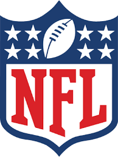

 fútbol americano
11/11/2021
nfl
El fútbol americano es un deporte de contacto en el que un gruupode jugadores tienen que recorrer una cancha de 100 yardas lanzando y corriendo con el balón
Motivación
Yo escogí este tema porque actualmente el americano es un deporte que me encanta ver y poder también participar en algunas cosas sobre el como en un fantasy y esas cosas, los partidos son muy entretenidos y me encanta verlos


 Referencias de nfl
Referencias de nfl